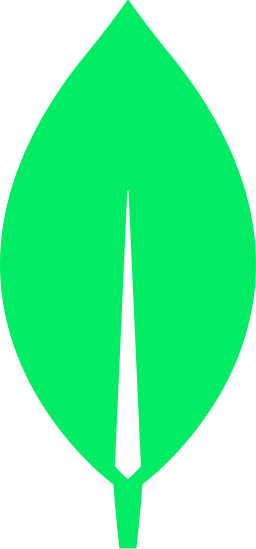

Hi, I'm Ivan. I make systems reliable and keep them that way.
Ivan Vasilev
Site Reliability Engineer II
SRE with 5+ years managing infrastructure automation, monitoring and database reliability across on-prem and hybrid environments: IBM infrastructure, Linux, MongoDB/MySQL and AWS. If I have to do something twice, I automate it.
- Sofia, Bulgaria
- +359 878 60 2616
- ivan.st.vasilev@gmail.com
- LinkedIn profile
- Website, projects & certificates
Experience
Site Reliability Engineer II
PROS Bulgaria EOOD · Sofia
Sep 2023 to now
- Own database reliability: sharded MongoDB (mongos, x.509) and MySQL clusters behind ProxySQL; capacity, scaling, backups and incident response.
- Patch and deploy: OS and application patching, version deployments and configuration across on-prem and hybrid IBM and Linux fleets with Foreman, Puppet and Ansible.
- Script to optimize operations: Bash/Python tooling that automates repetitive tasks and speeds up patching, deployments and routine maintenance.
- Run monitoring, alerts and on-call: Prometheus (Node/Proc exporters, Pushgateway), Grafana, Loki, Wazuh and PagerDuty, with custom metrics and tuned alerts.
- Operate the delivery path with GoCD and GitHub Actions, Nginx/HAProxy traffic layers, and AWS foundations (EC2, S3, IAM/SSO, VPCs, CloudWatch).
- Build AI agents (Langflow/Python) that generate API endpoints, open Git branches/PRs and Jira tickets, and drive AWS image deployments, always with human review.
System Administrator
Radioactive EOOD · Sofia
Jan 2023 to Aug 2023
- Administered Linux and Windows servers (patching, backups, access management) with Nagios and Zabbix monitoring and Bash/Python scripting.
- Set up secure connectivity with WireGuard/OpenVPN, VLAN segmentation and Cisco/pfSense networking.
System Administrator
Helpdesk Bulgaria · Sofia
Dec 2021 to Dec 2022
- Delivered L2 support for client servers, workstations and networks.
R&D Hardware Engineer
Behr-Hella Thermocontrol EOOD · Sofia
Feb 2021 to Nov 2021
- Embedded hardware development and testing for automotive climate-control products.
Selected projects

MongoDB scale-out with x.509Second production shard from scratch (5M+ docs, zero downtime); rebalanced 2,500 QPS from one shard to a ~1,500/1,000 split.
 21 TB database move to AWS
21 TB database move to AWS
Bash pipeline streaming files into tar archives via S3, preserving hard-link metadata, and restoring on EC2.
 MySQL SLA/SLO monitoring
MySQL SLA/SLO monitoring
Uptime SLA/SLO with custom Bash metric collectors scraped by Prometheus node exporter, visualised in Grafana.
 AI-assisted AWS deployment
AI-assisted AWS deployment
Agent that triggers EC2 Image Builder pipelines to produce AMIs and starts controlled Auto Scaling Group instance refreshes.
 Automated backend CI/CD
Automated backend CI/CD
GitHub Actions on self-hosted runners gating Spring Boot releases; SSH/SCP delivery with systemd restarts and JAR rollback.
- Proxmox/Kubernetes home lab
Kubernetes VMs behind pfSense with VLANs, HAProxy and ACME certificates; Wazuh, Vaultwarden, Prometheus and Grafana.